YODELING WIKI
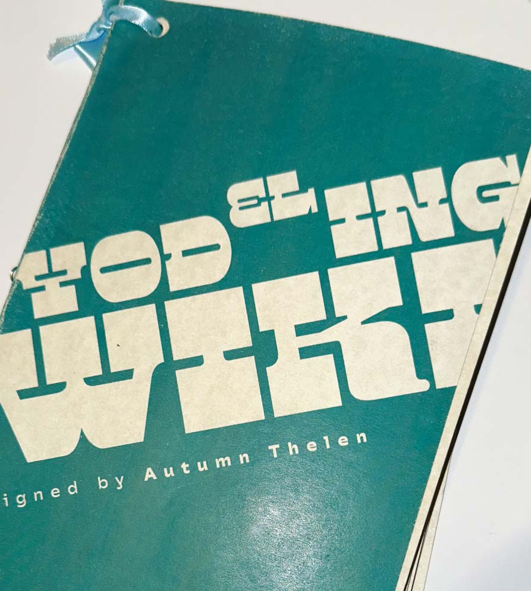
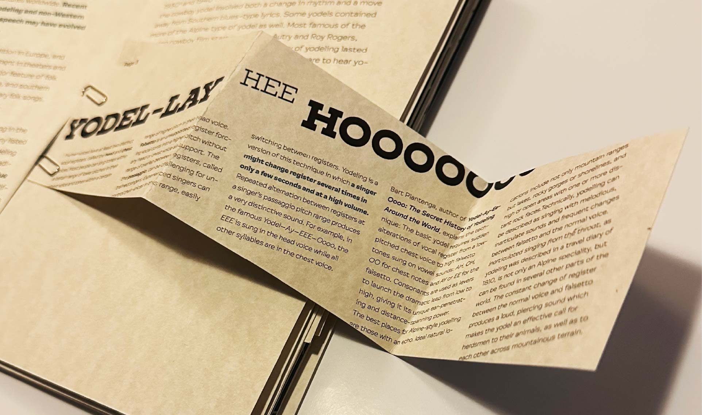
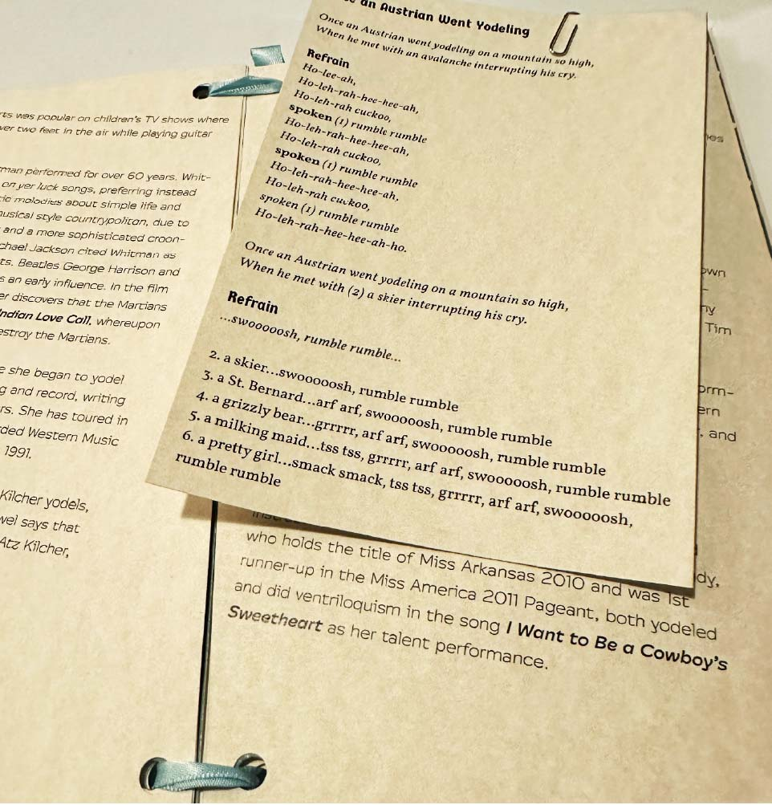
Task: Create a typography-only publication with all content from a Wikipedia article using only type and one color.
I used placement and angles of type to imitate projection and the contrast between chest and head voice in yodeling. I used a variety of page sizes (some inserted with paperclips) to convey the experience of reading a Wikipedia article and seeing a collection of material from different sources. I bound the publication with ribbon as a reference to Alpine culture.
Tools: Adobe InDesign
Materials: cream colored cardstock, blue ribbon, paperclips
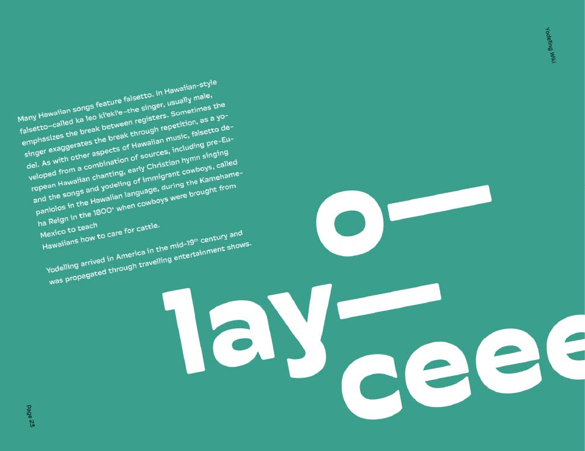
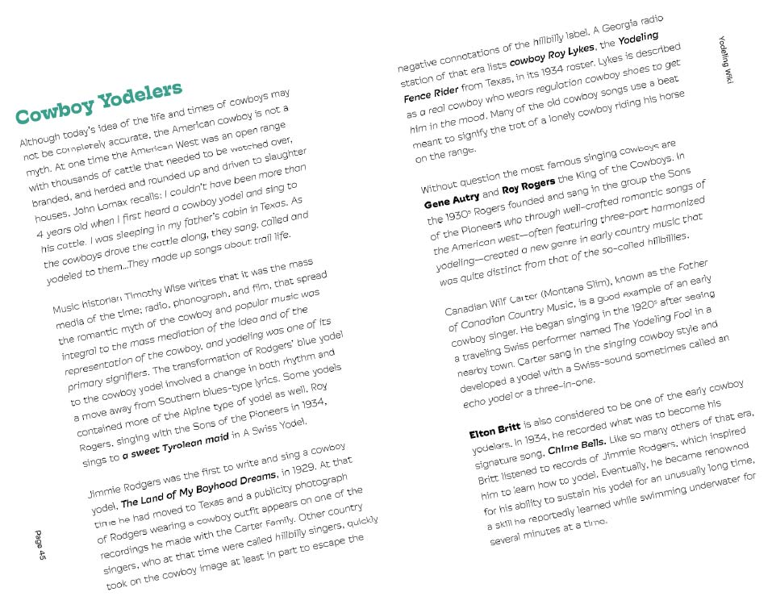
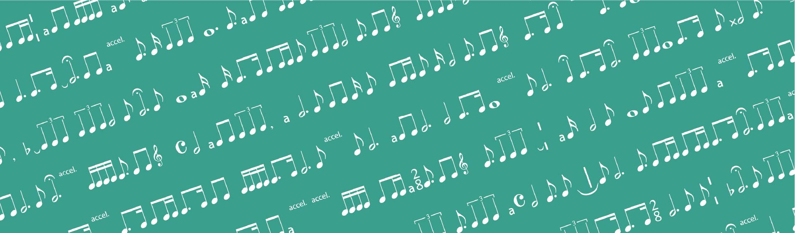
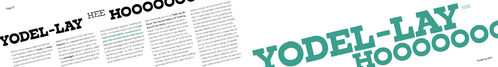
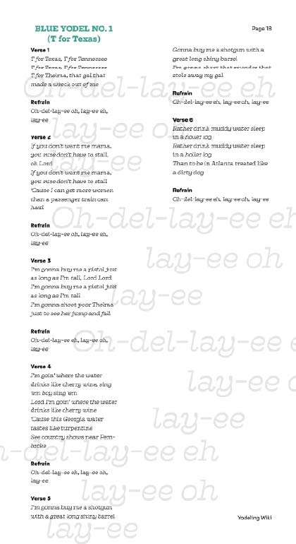
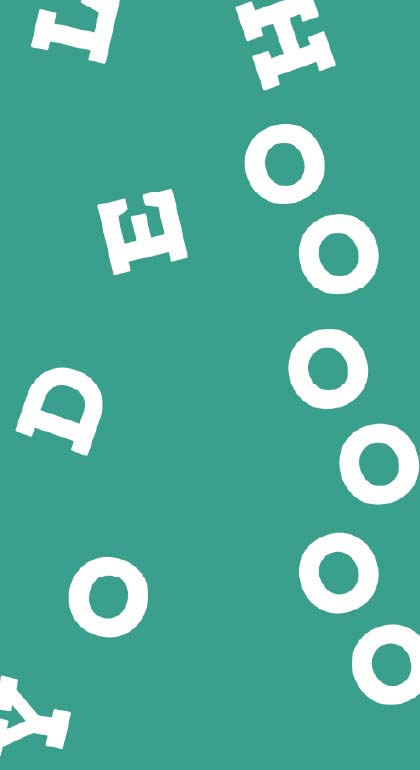
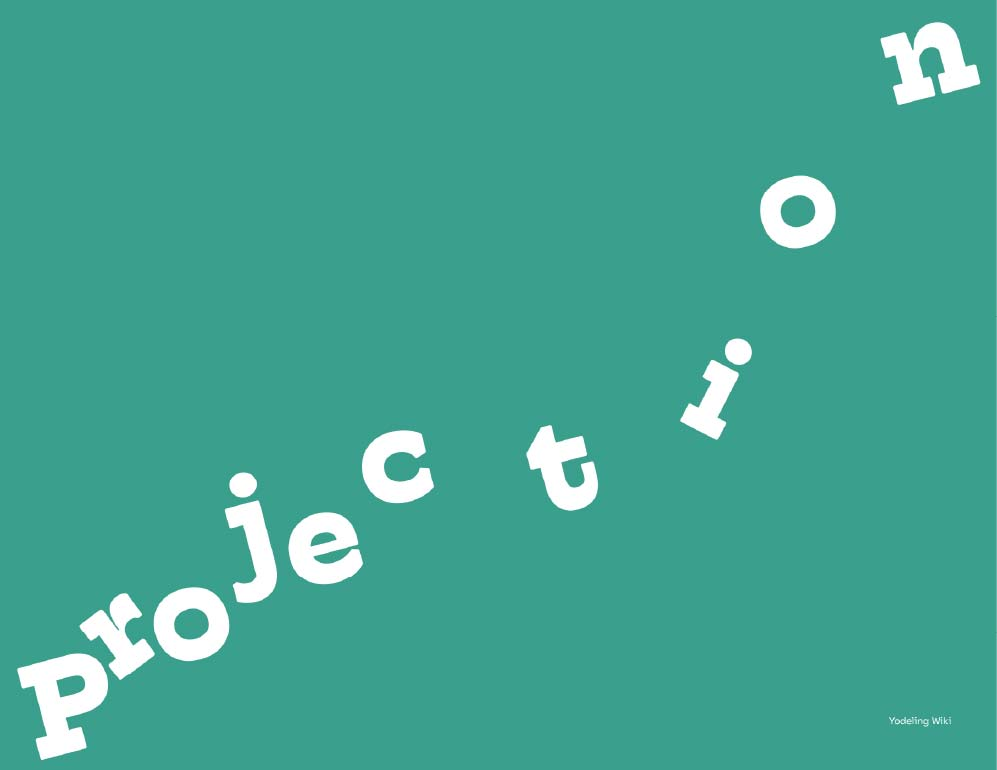
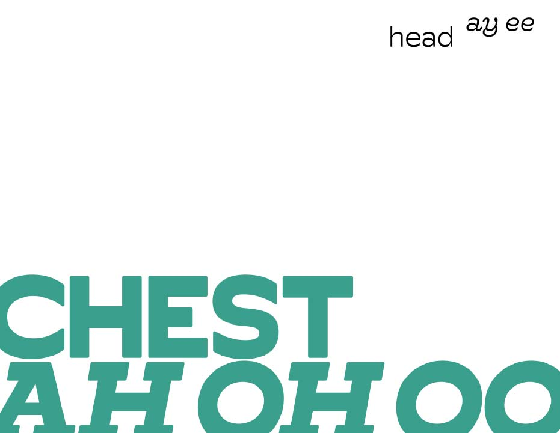
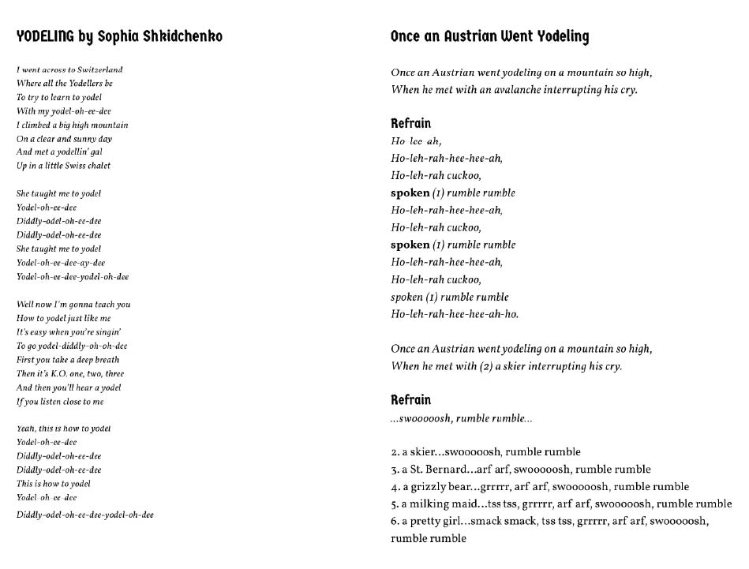
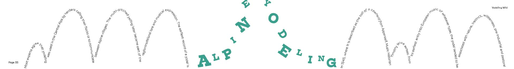